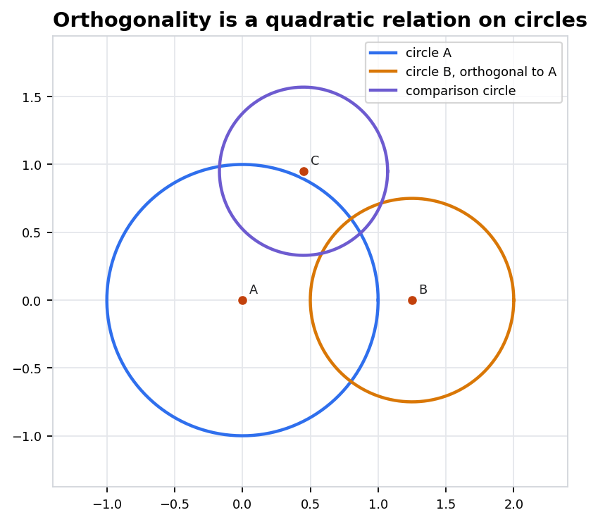
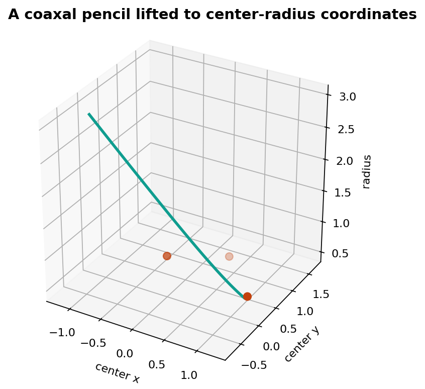

Geometry II / Manifest 433
Chapter 20: The Space of Spheres
Generalized spheres become points of a quadratic space; orthogonality, pencils, circular transformations, and polyspheric coordinates become algebraic tests.
Source span: PDF pages 358-371
Notebook: 20-the-space-of-spheres.ipynb
Design system: lecture-design-system-2026-05-24
Lecture Route
From Euclidean Spheres To A Quadratic Parameter Space
Stage
Visible Object
Invariant Test
1. Coordinates
Spheres, planes, and point spheres written by one homogeneous equation.
Scale of coefficients is ignored; the zero set is unchanged.
2. Form
Radius, degeneracy, and orthogonality read from a quadratic form and its polar form.
For circles, \(B(S,T)=0\) gives \(\|c-d\|^2=r^2+s^2\).
3. Families
Intersections, radical axes, and coaxal pencils become linear sections.
A pencil is the projective line \(\lambda S+\mu T\).
4. Symmetry
Circular maps and polyspheric coordinates use sphere data as coordinates.
Transformations preserve the sphere family and the orthogonality relation.
Definition Frame
One Homogeneous Equation Contains Spheres And Planes
Coordinate Vector
Represent a generalized sphere in \(\mathbb{R}^n\) by the coefficients of
\[
S(x)=a\|x\|^2-2\langle b,x\rangle+d=0,
\qquad S=(a,b,d).
\]
Multiplying \(S\) by a nonzero scalar does not change the sphere.
Normalization
If \(a\neq 0\), the center is \(c=b/a\) and \(r^2=(\langle b,b\rangle-ad)/a^2\). If \(a=0\), the equation is a plane.
The drawn object lives in \(\mathbb{R}^n\); the lecture studies its coefficient point.
Fundamental Form
The Form Measures Radius And Pairwise Contact
Quadratic Data
\[
Q(S)=\langle b,b\rangle-ad
\]
is homogeneous of degree two. For \(a\neq 0\), \(Q(S)/a^2=r^2\).
Polar Form
For \(S=(a,b,d)\) and \(T=(\alpha,e,f)\),
\[
B(S,T)=\langle b,e\rangle-\frac{af+\alpha d}{2}.
\]
Orthogonality is the linear equation \(B(S,T)=0\).
Conceptual Picture
A Sphere Moves As A Point In Parameter Space
Point Spheres
A point \(x\) is the degenerate sphere
\[
P_x=(1,x,\langle x,x\rangle), \qquad Q(P_x)=0.
\]
A real sphere is recovered by asking which point spheres lie on it.
Inspection Target
In the parameter space, the location of \([S]\) stores the entire Euclidean sphere. Moving a single point there changes center, radius, or even type.
Notebook Evidence
Orthogonality Is A Quadratic Relation On Circles

Notebook artifact: one circle orthogonal to \(A\), one comparison circle not orthogonal.
Circle Criterion
For circles \(S=(c,r)\) and \(T=(d,s)\),
\[
S\perp T \quad \Longleftrightarrow \quad
\|c-d\|^2=r^2+s^2.
\]
Recorded Check
The companion JSON records \(A_B\) orthogonality residual \(0.0\) and \(A_C\) residual \(-0.2794\). The visual is therefore paired with a measurable invariant.
Incidence
Intersections Appear After One Linear Cancellation
Subtract Two Normalized Spheres
If
\[
\|x-c\|^2-r^2=0,\qquad \|x-d\|^2-s^2=0,
\]
then common points also satisfy
\[
2\langle d-c,x\rangle+\|c\|^2-\|d\|^2-r^2+s^2=0.
\]
- The quadratic terms cancel, leaving the radical axis or radical hyperplane.
- A pencil keeps this linear incidence data visible across a family.
Families
A Pencil Is A Projective Line Of Spheres
Linear Pencil
The pencil generated by \(S\) and \(T\) is
\[
[\lambda S+\mu T], \qquad (\lambda:\mu)\in\mathbb{P}^1.
\]
Its visible members may be circles, planes, or degenerate limits.
Notebook Lift
The plotted curve uses center-radius coordinates to show a coaxal family as a structured path, not a pile of unrelated circles.

Artifact: a coaxal pencil lifted to \((\hbox{center }x,\hbox{center }y,\hbox{radius})\).
Symmetry
The Circular Group Preserves The Sphere Language
Structural Rule
A circular transformation sends generalized spheres to generalized spheres and preserves angle data encoded by \(B\). In coefficient language, it acts by transformations preserving the quadratic form up to scale.
Examples To Keep Together
Euclidean motions, similarities, inversions, and Mobius-type maps are best read as parts of one sphere-preserving transformation story.
Worked Transformation
Inversion Swaps Two Coefficients But Preserves \(Q\)
Unit Inversion
Put \(x=y/\|y\|^2\) in
\[
a\|x\|^2-2\langle b,x\rangle+d=0.
\]
After multiplying by \(\|y\|^2\), the image sphere is
\[
d\|y\|^2-2\langle b,y\rangle+a=0.
\]
Invariant
The coordinate change \(S=(a,b,d)\mapsto S'=(d,b,a)\) leaves \(Q(S)=\langle b,b\rangle-ad\) unchanged.
Coordinate Endpoint
Polyspheric Coordinates Read Points Through A Sphere Frame
Coordinate Rule
Choose a sphere frame \(S_0,\ldots,S_{n+1}\). A point \(x\) can be recorded by polar data
\[
u_i=B(P_x,S_i).
\]
The \(u_i\) are constrained by the same quadratic form.
Reading The Coordinates
Powers, signed contacts, and angle relations become coordinate entries. The payoff is not more numbers; it is a coordinate system adapted to spheres.
Live Check
Orthogonality Residuals Make Claims Auditable
Notebook Example
Circle \(A\): \(c_A=(0,0)\), \(r_A=1\).
Circle \(B\): \(c_B=(1.25,0)\), \(r_B=0.75\). \[ \|c_A-c_B\|^2=1.5625,\qquad r_A^2+r_B^2=1.5625. \]
Circle \(B\): \(c_B=(1.25,0)\), \(r_B=0.75\). \[ \|c_A-c_B\|^2=1.5625,\qquad r_A^2+r_B^2=1.5625. \]
Residual
\[
\rho(S,T)=\|c-d\|^2-r^2-s^2.
\]
The check file records \(\rho(A,B)=0.0\), \(\rho(A,C)=-0.2794\), and 80 sampled pencil members.
Takeaways
The Chapter Is A Translation Machine
EncodeSpheres, planes, and point spheres are coefficient vectors \(S=(a,b,d)\), considered up to scale.
MeasureThe quadratic form \(Q\) gives radius data; the polar form \(B\) gives orthogonality and contact tests.
OrganizeIntersections and pencils become linear relations in the sphere space, which makes families inspectable.
TransformCircular transformations preserve generalized spheres and carry the same algebraic tests along.
Exit Prompt
Given two visible circles, compute \(\rho=\|c-d\|^2-r^2-s^2\). Then apply a unit inversion on paper and predict which coefficient entries change before drawing the image.
Deck Audit Trail
Local evidence: two chapter figures and one JSON check under \(D:/Geometry/Geometry-II/artifacts/chapter-20\). Notes are mirrored in \(chapter-20-speaker-notes.json\).
Notebook: D:/Geometry/Geometry-II/chapter-20-the-space-of-spheres/20-the-space-of-spheres.ipynb
Source PDF: D:/Geometry/Geometry-II/Geometry-II.pdf